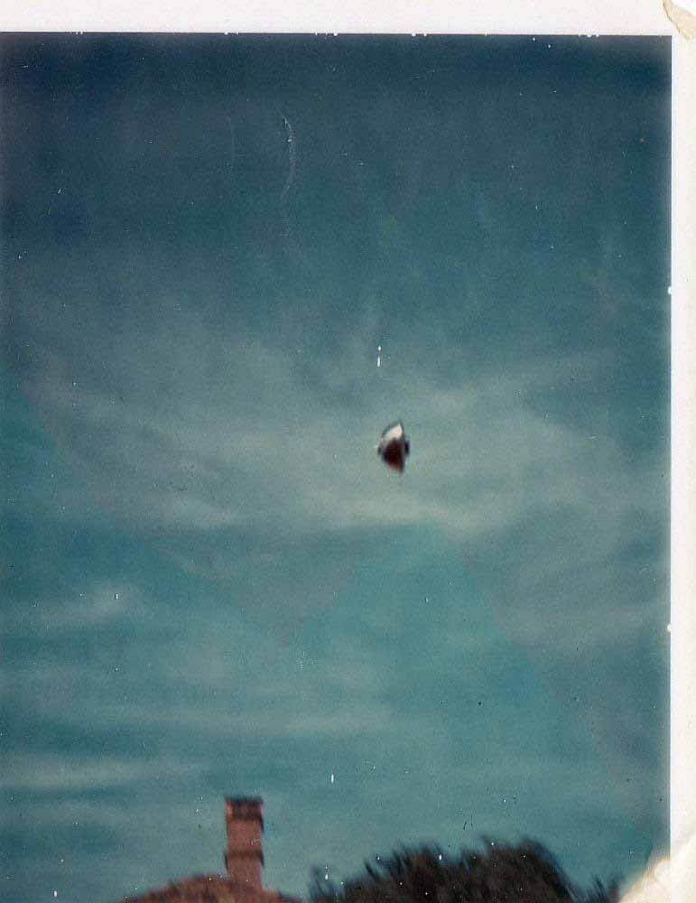
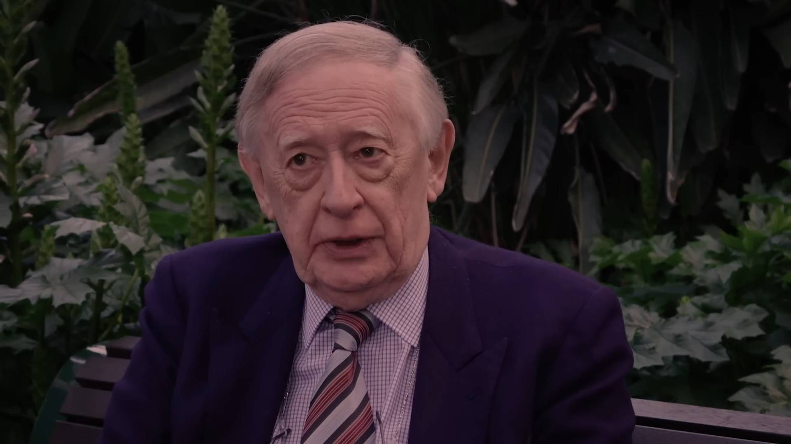

1966-04-02, Australia : 有名なポラロイド写真の UFO ⇒ この正体は 自転する orb だ
（上：ともに回転非対称＋下部の形状が共通 ⇒ どちらも自転する orb ）
（上：この UFO が著しく回転対称から外れているいことの図解）
履歴
- (2023-04-05) 比較した図解を追加。 - (2023-03-29) 図解を追加。1966-04-02, Australia : ポラロイド撮影した UFO の詳細状況 → 正体は…（途中3） (2023-03-29) - (2023-03-20) 追加。1966-04-02, Australia : ポラロイド撮影した UFO の詳細状況 → 正体は…（途中3） (2023-03-20) - (2023-02-27) 追加。撮影者本人が証言している動画を追加。1966-04-02, Australia : ポラロイド撮影した UFO の詳細状況 → （もしかして正体は…）（途中2） (2023-02-27) - (2021-12-23) 作成。 1966-04-02, Australia : ポラロイド撮影した UFO の詳細状況 → （もしかして正体は…）（途中1） (2021-12-23)
(2021-12-23 begin)前置き
- 以下、直前の記事の写真の件の詳細。Grant Cameron の動画の中に、1966年に撮影された有名な UFO 写真の高精細画像が登場していた。 - この写真はかなり有名で何度も見かけたことがあるがどれも画素が荒いものばかりだった。 今回初めて高精細の画像を目にし、この高精細画像の UFO に本来ありえない不審な箇所が目についた。 - その不審な箇所は、 (a) 空中を飛行する UFO としては説明できず、また (b) 金属物体を吊るすとか、 (c) 金属物体を空中に放り投げる といった通常の捏造方法でも説明ができないものだった。 - 目撃証言によると、目撃者から約100m の距離で、上空約 50m にこの UFO が見えたと（重要な情報）。 - しばし考えて、この UFO の正体に関する合理的な候補を思いついた。そこでそれを記録しておく。 - 記録のついでに当時の撮影状況などの詳細データを探してきた。 - 後述の Web での参照記事は長いし、画像も多い。よって何回かに分けて追加する。問題のポラロイド写真
- 下の写真が最良のものらしい。クリックで拡大。  - 以下では最初に Web で見かけた詳細記事の DeepL 翻訳を掲載する。DeepL
2016年3月22日(火) 50年後... 1966年4月2日、オーストラリア、バルウィンの写真 - 再考 1966年4月2日、オーストラリア・メルボルンでの目撃者ジェームズ・ジョンソン・キベルによる観察と写真についてのステージ1レポート。 キース・バスターフィールドとポール・ディーンによって編集された。 1. はじめに 1.1 オーストラリアのビクトリア州メルボルンに住むジェームズ・ジョンソン・キベルによる1966年4月2日の視覚・写真観察に関するこの第1段階報告書の目的は、一次資料と二次資料をできる限りまとめ上げることである。 私たちはジェームス・キベル氏の居所を突き止め、この報告書が出版される前に彼に読んでもらう機会を持ちました。彼は、私たちが彼の実名を使うことに何の問題もないと忠告してくれた。 1.2 この観測と写真については、インターネット上に多く存在する。しかし、そのほとんどは、セカンドハンド、サードハンド、あるいはもっと悪いものです。私たちは、この観測と写真がUFO現象について何を語っているかを読者が自分で判断できるように、できるだけ多くのファーストハンドとセカンドハンドの資料を探し出し、利用できるようにしたいと思いました。 2. 1966年当時の一次資料 2.1 この観測と写真に関する情報源はいくつかある。私たちは、目撃者自身が直接関与しているものを一次資料と定義している。 -1966年4月2日に撮影されたポラロイド写真 -航空現象に関する国家調査委員会（NICAP）の報告書（1966年4月19日付、ジェームス・キベル記入 -1967年6月28日にメルボルンで行われた、ジェームズ・E・マクドナルド教授によるジェームズ・キベルのインタビュー。 - ポラロイド写真の現像に立ち会ったデビッド・イングリッシュ氏の1966年5月2日付陳述書 - 1966年4月、ジェームズ・キベルが描いた家と庭のスケッチ。 3. 二次資料 3.1 1966年当時の出来事については、他にも多くの情報源がある。これらは、目撃者が直接作成したものではありません。 - 1966年4月12日付メルボルンの "The Herald" 紙（著者不明）。 -航空現象研究機構（Aerial Phenomena Research Organization: APRO）会報の1966年5-6月号。(著者未確認) -ビクトリア空飛ぶ円盤研究会（VFSRS）オーストラリア空飛ぶ円盤レビュー（AFSR）1966年7月号（著者不明）。 -「イングリッシュ・フライング・ソーサー・レビュー」1966年7-8月号。(ピーター・ノリスが著者としてクレジットされている）。 -APRO Bulletinの1966年9月号と10月号。(執筆者未定) -VFSRS Australian Flying Saucer Review の 1966 年 12 月号。(著者不明)。 3.2 ここでは、それらの記事のテキストを提供する。 4. 一次資料 4.1 カラーポラロイド写真。 VFSRS AFSRとAPRO Bulletinの両方に掲載されたカラーポラロイド写真の白黒コピー。 この写真の「最良の」カラーコピーは、James Kibel氏がオーストラリアの研究者Bill Chalker氏に提供し、2009年1月19日にBill氏のブログサイトに掲載されたものである。 http://theozfiles.blogspot.com.au/2009/01/westall-ufo-black-swan.html を参照。 pic_rep 4.2 NICAP レポートフォーム 以下は、このフォームの文章です。 1. 氏名 ジェームス・キベル 住所 22 Austin Street, Balwyn, E8, Melbounre, Victoria, Australia. 勤務先 メルボルン、ビクトリア州 職業 会社役員 学歴 小・中・高等学校、専門学校 特別教育。行政、民間防衛 軍務につく。放射線専門家、本部教官、民間防衛（手紙も参照）。電話：802280。 2. 観測日。1966年4月2日。 時間：東部標準時午後2時21分。 3. 観察場所 バルウィンの家の庭。 4. 4. どのくらいの時間、その物体を見ましたか？6秒くらい。 5. 天候は？明るい日中。ごく薄い雲。 6. 太陽や月の位置。物体の上と後ろにある太陽。最初は東から西へ-太陽に向かって-温度は約81度F. 7. N/a 8. 私より多くのオブジェクト？いいえ。 9. 対象物を描写してください。 平らな面を私の方に向けたとき、回転していることに気づきました。 10. その物体は空の背景より明るかったですか？良いコントラスト。 11. いいえ。 12. その物体は a. いつでも止まっているように見えた。はい、端に寄った後、ごく短時間でした。 b. b. 急にスピードアップして走り去る。はい、端で旋回した後、平らな面を私の方に向けた。北の方向に非常に速く移動した。 c. c. 部品に分解したり、爆発したりする。しない。 d. 煙を出す。しない。 e. 目に見える痕跡を残す。いいえ。 f. 何かを落とすこと：禁止 g. 明るさを変える。太陽を反射するときだけ、しない。 h. 形状を変える。しない。 i. 色が変わった：いいえ 13、物体は何かの前を通ったり、後ろを通ったりしましたか？北に移動するとき、庭から見えなくなった。 14. 風はありましたか？ あった。 風向・速度： 北西の強風（時速20-25m）。 15. 光学機器による観測を行いましたか？いいえ、ビューファインダーでも見えませんでした。 16. 16.物体は何か音を発していましたか？最初はなかったが、北に移動した後、大きなブーンという音が私と目撃者から聞こえた。 17. 17.その物体が何であったか、チェックしてください。 a. ぼんやりしている。 b. 明るい星のようだった。 c. 輪郭がくっきりしている。空に対して輪郭がはっきり見える。 用紙に手書きで記入。 使用カメラ：Polaroid Model 800 かなり古いカメラ。無限遠にセットして、EVスケールでEV II。フィルムは2年前のPolacolour 48を使用。 pic 18. 対象だったのか。 a. 自発光式であった。 b. 鈍い仕上げ。 c. 反射する？非常に - 磨かれた金属でできているようだった。 19. 物体は動いている間、上昇したり下降したりしたか？ 最初は水平飛行で下に流れた。それから、端に傾いた。その時、私は写真を撮りました-それは、その軸で90度回転して、平らな表面を私の方に向けた時、もたつくように見えました-この時、私は物体の回転を見ました-それはそれから北に移動しました-非常に速く。 20. 見かけの大きさ: 腕の長さで1/2 "から1 "である。 21. 21. どのようにして、その物体に気づきましたか？ 庭の太陽の反射がとても明るかったので、見上げました。 22. 22. どこで、何をしていましたか？ 庭で家と庭の写真を撮ろうと思っていた。 23. 物体はどのように視界から消えましたか？とても速く北に向かいました。木などで見えませんでした。 24. 物体の速度を飛行機と比較してください。 最初は飛行機よりかなり遅く、北に移動する時に飛行機よりかなり速くなった。 25. 周辺に飛行機は？ 10分後に民間航空局の飛行機が飛んできた。 26. 26.その物体の距離を推定してください。私から約350-400フィート、上空約150フィート。 27. 標高は？ （スケッチ画） 28. 目撃者の名前と住所。 目撃者は関わりたくないので、現時点では名前を教えることができません。 29. 地図を描く。 30. 空港、軍事施設は？ はい。空軍無線学校は約3/4マイル離れている。 31. 以前のUFOは？ 1957年に一度、上記A地点から目撃 - その時は3人の目撃者。 32. 写真などを同封してください。 33. 空軍の調査官からインタビューを受けましたか？ いいえ、まだ受けていません。 連邦、州、郡、または地元の役人？ いいえ、新聞社1社です。VFSRSのピーター・ノリスが写真を見ていました。事件を明らかにしないように頼まれましたか？ いいえ、まだです 34. あなたの名前を使ってもいいですか？ 現時点では私の名前を使わないでください。 1966年4月19日付け 署名：James Kibel. …（途中） ref: UFOs - Documenting The Evidence - http://ufos-documenting-the-evidence.blogspot.com/2016/03/50-years-on-2nd-april-1966-balwyn.htmlこの UFO の正体の合理的な候補
… (2021-12-23) (2021-12-23 end)
(2023-02-27 begin)前置き
- この事件の撮影者本人が、このポラロイド写真を手に証言している動画を見かけたので記録しておく。手抜き
- 27:28-- 1966, オーストラリアの学校の数日前、ポラロイドカメラで撮影した例の写真の撮影者の証言。オリジナルのポラロイド写真を見せている。全てクリックで拡大。切り出し静止画
音声書写（自動生成）
▼展開
NARRATOR: may not have been an isolated incident. The Westall landing 27:28 Four days prior, a then-young engineer in nearby Balwyn was taking photos in his mother's garden when something caught his eye. 27:38 This tremendous flash of light, and I looked up, and I saw this object... 27:43 I had a Polaroid camera. I pulled this up and hit myself on the face. And I took the picture. I've got the photograph here. 27:51 This is the original Polaroid? That's it. 28:03 Looked like it was made out of some form of metal, and it was engineered. And being an engineer, I was sure it was. 28:12 And this is when I took the photograph, and it had tipped around and I could see the bottom, and it looked like it was rotating to me. 28:20 That was it, and then after that, it sort of gave a bounce and it rocketed away to the north, very high speed. 28:27 INTERVIEWER: Can you describe the acceleration? It was almost instantaneous. It's like it had been shot out of a gun. 28:34 Wham, you know? NARRATOR: Air Force officers showed up at his doorstep 28:40 asking for every detail of his experience. And they also had some photographs of similar things, 28:48 and they also had a book which had pictures of things in which... 28:53 They didn't leave it with me, but I had a look through. But they said it was an unidentified flying object. 29:03 That was it. INTERVIEWER: What was the implication? ENGINEER: That it didn't come from anywhere on Earth.DeepL
NARRATOR: 単独の事件ではなかったかもしれない。ウェストールの着陸 その4日前、バルウィンの近くに住む当時若いエンジニアが、母親の家の庭で写真を撮っていたとき、何かが彼の目にとまりました。 ものすごい閃光が走ったので見上げると、こんなものが......。 ポラロイドカメラを持っていたんです。これを引き寄せて、自分の顔にぶつけたんです。そして写真を撮りました。その写真はここにあります。 T これがオリジナルのポラロイド？ そうです。 何かの金属でできているように見えたし、工学的なものだった。エンジニアである私は、そう確信していました。 写真を撮ったとき、それが傾いて底が見え、回転しているように見えたんです。 そして、その後にバウンドして、北の方へ高速で飛んで行きました。 INTERVIEWER: 加速度について教えてください。ほとんど瞬間的でした。まるで銃から発射されたようでした。ワム、わかる？ 空軍の将校が彼の家の前に現れ、彼の体験について詳しく尋ねました。彼らは似たようなものの写真もいくつか持っていましたし、その写真が載っている本も持っていました...彼らは私にそれを託しませんでしたが、私は目を通しました。でも、それは未確認飛行物体だと言っていました。それだけです。 INTERVIEWER: その意味するところは何だったのですか？ エンジニア：それは地球上のどの場所からも来たのではないということです。☑動画(1:40:26)
The Phenomenon (2020) | FULL MOVIEmemo
▼展開
Premiered Oct 1, 2022 This explosive documentary is the most credible examination of the global mystery and cover-up involving UFOs. With shocking testimony from high-ranking government officials, and NASA Astronauts, Senator Harry Reid calls it “meritorious.” Director James Fox’s explosive documentary is being hailed as the most credible and revealing film ever made about the long-standing global cover-up and mystery involving unidentified aerial phenomenon. Including shocking never-before-seen testimony from high-ranking government and military officials, NASA Astronauts, and riveting footage, the timely film includes bombshell reveals about UAP incursions at nuclear weapon facilities, and the monumental events behind the NY Times’ recent disclosure of UFO videos, PROJECT BLUE BOOK and The Pentagon’s classified UFO program. Providing eye-opening evidence that mankind is not alone in the universe, Senator Harry Reid says, “The Phenomenon makes the incredible credible.” ✓ Former Senior CIA Officer Jim Semivan, calls it “The most important documentary of the year.” ✓ Dr. Jacques Vallee says “70 years of secrecy has led to this. The most credible documentary ever made about UFOs.” Narrated by Peter Coyote (E.T), the film includes Senator Harry Reid, President Clinton, John Podesta, White House Chief of Staff for Clinton and advisor to Obama, Governor Bill Richardson, former U.S Department of Defense Senior Intelligence Official, Christopher Mellon, NASA Astronauts, Governor Fife Symington, Dr. Garry Nolan, Dr. Jacques Vallee, who was portrayed in Steven Spielberg’s Close Encounters of the Third Kind, and more. Hit that subscribe button for reminders and new feature films weekly. Watch The Phenomenon online!関連
- これも Ross Coulthard が言及していたが、この事件の 4日前にも上の事件現場から遠くない地点(*1)で似た形状の UFO が目撃され、写真撮影されている。それは下の過去記事で取り上げた。 1966-04-02, Australia : ポラロイド撮影した UFO の詳細状況 → （もしかして正体は…）（途中1） (2021-12-23)(2023-02-27) (2023-02-27 end)(*1)
- この 2箇所の地図を並べておく。上が Westall で下が "22 Austin Street, Balwyn, E8, Melbounre, Victoria, Australia" に相当。互いにさして離れていない。 ref: Ross Coulthard : 1966-04-06、オーストラリア：Westall UFO 事件での政府の大規模な隠蔽工作を語る (2022-09-12)
(2023-03-20 begin)前置き
- 前述の 2021-12-23 の記事部分で- この写真はかなり有名で何度も見かけたことがあるがどれも画素が荒いものばかりだった。 今回初めて高精細の画像を目にし、この高精細画像の UFO に本来ありえない不審な箇所が目についた。 - その不審な箇所は、 (a) 空中を飛行する UFO としては説明できず、また (b) 金属物体を吊るすとか、 (c) 金属物体を空中に放り投げる といった通常の捏造方法でも説明ができないものだった。と述べたが、その理由を説明するための図解がダルくて放置していた。 - そんな中、下の動画の中で図解に うってつけ となる映像が登場していたので、忘れ去る前に理由の一部の説明を下で行うことにした。ソースとなった動画(1:13:20)
Who Saw The Men In Black (Full Movie)理由の一部を図解
- UFO 部分を拡大し見やすくしたものが下。 - 上を90度回転させて、説明を記載。太い中心軸も、回転中心からズレていることに留意（この点ではカラー写真の方がより明瞭）。下図の説明記載に誤記があった（対象→対称）。 - 人工的な金属製品では回転対称だから（回転非対称に加工すると美観が損なわれ、欠陥品のクレームが殺到するのみならず、製造コストも跳ね上がる）、この写真のような非対称の画像にはならない。回転を加えて放り投げてもこのような非対称な写真にはならない。仮に、回転軸にブレがあったとしても非対称にならず、ぶれた画像となるだけ。 - UFO 写真を捏造するために、敢えて非対称な半球金属体をわざわざ自作する筈もない。UFO を操る ET が非対称好みだということを示す事例もない。 - そして、（EMF 異常によって発生する） orb が回転非対称になる複数の事例を下の過去記事で取り上げている。 …もう一つ、皆が見逃している部分
… … (2023-03-20 end)
(2023-03-29 begin)前置き
- 回転対称になっていないことを、より分かりやすく図解したのが下。説明
- 赤線は輪郭。左側半球の輪郭を赤で抽出し、それを水平方向に反転して右側の半球に沿って重ねている。右側の半球に沿って重ねる際に、上端の中央部と下端の縁の部分を一致させている。 - 重ねる際には、敢えて回転対称に近くなるように（＝私の仮説に不利になるように）している。それでも下図のように大きく回転対称からズレていることが見て取れる。さらに中央を太く貫く中心軸（その中心軸の中央線が私が追加した細い直線 L となる）が半球の仮想的な中心軸から大きくずれていることも見て取れる。L も私の仮説に不利となるように意図的に傾きを減らしているが、それでもズレは明瞭。 - 下の図から、この "UFO" は固体ではなく、自転する orb （プラズマ）だと判断できる。orb だから周囲の電磁界パターンに応じて形状も挙動も容易に変化する。下端の縁の形状が左右で大きく異なるのもそれが理由。 （記事の冒頭の写真と同じもの） - なお、中央部の太い軸が如何にも自然物ではあり得ないように思えるかも知れぬが、下の映像を見れば orb の中央に突起が生じる事例は他でも起きている。(2023-03-29 end)【編】Mexico: Pedro Avila が撮影 : 上空で絡み合って飛行する 2機のドーム型 UFO の動画 → その正体 （追加1） (2023-02-28)
(2023-04-05 begin)前置き
この "UFO" の正体が自転する orb であることの ダメ押しの図解を下（と記事の冒頭）に示す。なお、orb が諸条件によって黒く見えたり、金属の質感に見えたりすることは、ベテラン UFO 研究者の Stan Gordon などが証言(*１)している。 右の "UFO" は下の過去記事で取り上げた映像の拡大。 ref: 画像解析の専門家が本物と認めた最良の UFO 写真 → この正体を解く （途中1） (2022-05-18)(*1)
下の過去記事で取り上げた。 … (2023-04-05 end)
初出
1966-04-02, Australia : 有名なポラロイド写真の UFO ⇒ この正体は 自転する orb （途中4） (2023-04-05)